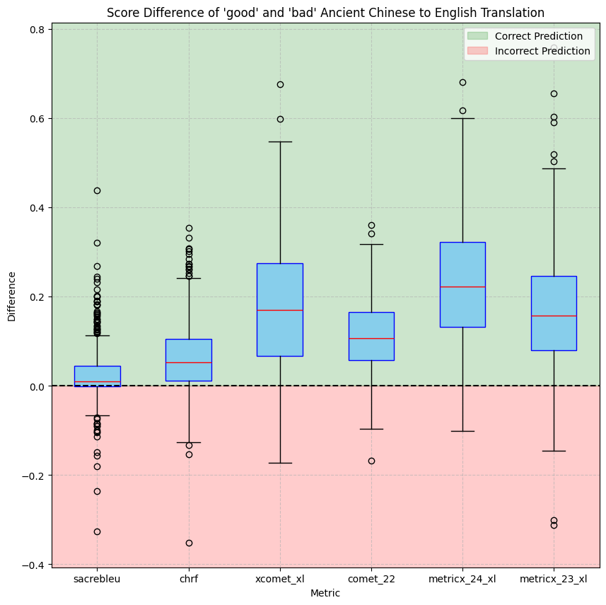

Mandarin Trainer
Full-stack Mandarin vocabulary training website with a spaced-repetition interface designed around the specific challenges of learning Chinese.
My research interests are in multilingual NLP, machine translation, and model evaluation, especially where language technology meets historically rich or under-resourced text.
I am currently refining the exact framing of my research goals. The working direction is: build and evaluate language technologies that are useful for people studying, translating, and reasoning across languages, cultures, and historical corpora.
I am a PhD student in Computer Science at Northeastern University, advised by Terra Blevins and David Smith.
Previously, I graduated from the University of Maryland with degrees in Computer Science and Chinese, where I was advised by Marine Carpuat and Andrew Schonebaum.
I work on problems around language, translation, and evaluation. Much of my recent work sits near Classical Chinese, multilingual NLP, and the question of whether our evaluation tools actually measure the improvements we care about.
Outside of research, I like building small web tools, language learning systems, and deliberately simple websites that feel closer to older academic homepages than modern product pages.

Eric R. Bennett, HyoJung Han, Xinchen Yang, Andrew Schonebaum, Marine Carpuat
Proceedings of the Second Workshop on Ancient Language Processing (ALP 2025), pages 71-76.

Full-stack Mandarin vocabulary training website with a spaced-repetition interface designed around the specific challenges of learning Chinese.
A small-batch pickle company founded with Chris Moon, built around unusual flavors, local ingredients, and a good team.

Image and video to ASCII conversion experiments. The original version uses character-pixel distance matching; ASCIIFY-2 moves the project into a more interactive browser workflow.

Last Updated June 16, 2026
There's a secret button on this page, can you find it?
.